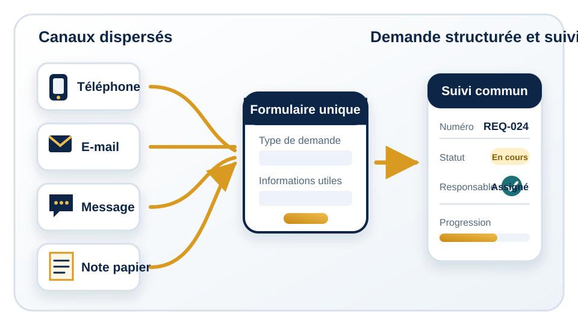

Objectif de la leçon
À la fin de cette leçon, vous pourrez expliquer ce qu'est une digitalisation organisée, analyser le fonctionnement actuel d'une procédure et identifier les premiers éléments nécessaires à un suivi plus fiable.
Digitaliser ne consiste pas simplement à remplacer le papier par des fichiers. Il s'agit d'organiser le travail, les données et les procédures avec des outils numériques adaptés.
À la fin de cette leçon, vous pourrez expliquer ce qu'est une digitalisation organisée, analyser le fonctionnement actuel d'une procédure et identifier les premiers éléments nécessaires à un suivi plus fiable.
Scanner un document ou convertir un formulaire papier en PDF peut faciliter son archivage ou son envoi. Cette action ne résout toutefois pas les difficultés du processus si les demandes continuent à circuler entre plusieurs personnes sans règle claire.
Un document numérique reste difficile à exploiter s'il n'est pas classé, si personne ne connaît son statut ou si les mêmes informations doivent être ressaisies dans plusieurs fichiers. La digitalisation doit donc porter sur le fonctionnement complet, pas uniquement sur le support du document.
Une digitalisation utile relie trois dimensions. Le travail précise les actions à réaliser. Les données décrivent la demande, son responsable, son statut et son historique. La procédure indique l'ordre des étapes, les validations nécessaires et les conditions de clôture.
Les outils viennent soutenir cette organisation : un formulaire peut recueillir les informations, une base ou un tableau peut les conserver, un tableau de bord peut afficher l'avancement et des notifications peuvent signaler une nouvelle demande ou un retard. Chaque outil doit répondre à un besoin clairement identifié.
Une organisation doit d'abord observer la manière dont le travail est réellement effectué. Le processus décrit dans une procédure officielle peut être différent des pratiques quotidiennes. Des validations informelles, des messages privés ou des fichiers personnels peuvent avoir été ajoutés pour compenser des difficultés.
Un diagnostic simple commence par les questions suivantes :
Il faut également repérer les doubles saisies, les informations demandées plusieurs fois, les étapes sans valeur ajoutée et les moments où personne ne sait clairement qui doit agir. Ce diagnostic permet de simplifier la procédure avant de la digitaliser.
Une petite organisation de formation et de conseil reçoit des demandes de renseignements, d'inscription et d'accompagnement par téléphone, e-mail et applications de messagerie. Chaque collaborateur note les informations à sa manière : carnet personnel, boîte e-mail, conversation ou fichier distinct.
L'organisation met en place un formulaire unifié. Les demandes reçues par téléphone ou messagerie sont également enregistrées dans ce même point d'entrée. Chaque demande reçoit un numéro, un statut — nouvelle, en cours, en attente ou clôturée — et un responsable.
Les collaborateurs consultent une liste commune plutôt que leurs notes individuelles. Le responsable peut repérer les demandes sans réponse, répartir le travail et mesurer le délai moyen de traitement. Le demandeur reçoit une référence lui permettant d'identifier clairement son dossier.

Choisissez une procédure fréquente : demande d'information, inscription, validation interne, achat ou intervention technique. Répondez aux cinq questions de diagnostic, puis notez une étape inutile et une information qui devrait permettre de suivre l'avancement.
Ne choisissez pas encore de logiciel. Décrivez d'abord le résultat attendu : par exemple, « chaque demande possède un responsable et un statut visible ».
Répondez avant d'ouvrir la correction.
Réponse : non. La conversion peut être une première action, mais une digitalisation organisée structure aussi les données, les étapes, les responsabilités et le suivi.
Réponse : comprendre le processus actuel, ses acteurs, ses données, ses retards et ses étapes inutiles, puis définir le besoin à résoudre.
Réponse : au minimum un identifiant ou numéro de demande, un statut, un responsable et un historique des actions importantes.